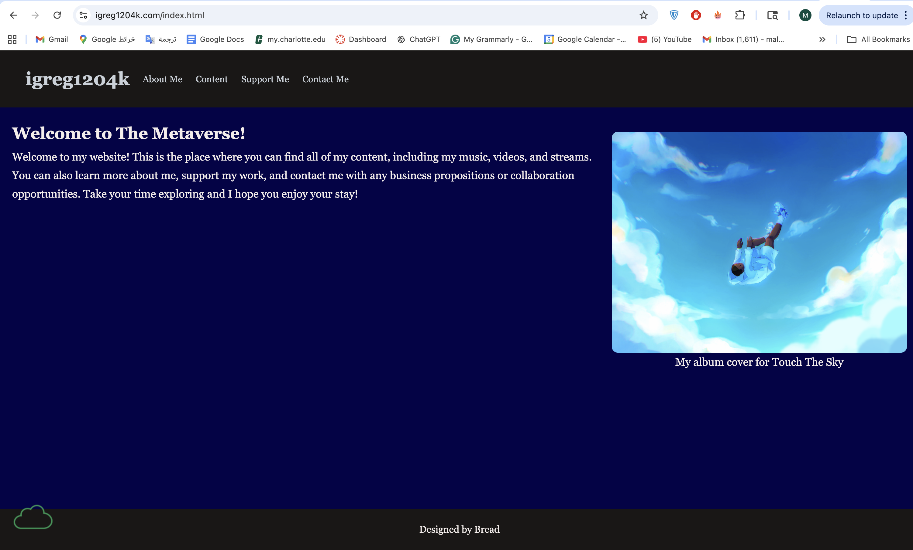

Peer Review 2
Skinner, Ian

- The submitted project leads to a working website for SkinnerDesign Company, so the site is accessible and functional.
- The file naming appears clean and follows lowercase formatting, which is consistent with the assignment expectations.
- The design is readable and uses a consistent color scheme, which helps create a clear visual identity for the brand.
- The layout includes structured content and grouped sections, which shows some use of alignment and proximity from the CRAP design principles.
- The site includes a header area with branding and a main content section, which begins to follow the required page structure.
- The content clearly explains the purpose of the company and the services offered, which is a strong start for a client-based project.
- However, the project currently appears to include only one page. The assignment requires a minimum of five pages, so additional pages are needed to fully meet the requirements.
- There is no visible navigation bar linking multiple pages, which is also a required part of the assignment.
- I recommend adding additional pages such as About, Services, Projects, or Contact, and connecting them with a consistent navigation bar across all pages.
- It would also be helpful to ensure that each page includes a consistent header, main, and footer structure as required by the checklist.
- Adding validation links and checking HTML/CSS validation would further improve the quality of the project.
- Overall, this project is a good starting point with a clear idea and design direction. The main next step is expanding it into a full multi-page website to meet the assignment requirements.